Ninohe
Ninohe · Iwate
Ninohe
Highlighted on the Iwate map.
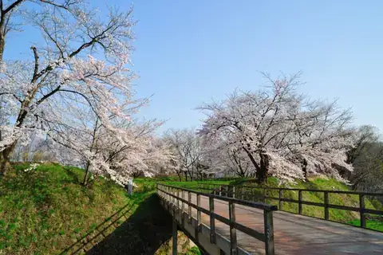
Stay
天然温泉 二戸シティホテル
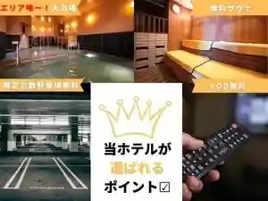
Tennen Onsen Ninohe Shiteihoteru
Hotel in Ninohe, Iwate.
二戸パークホテル
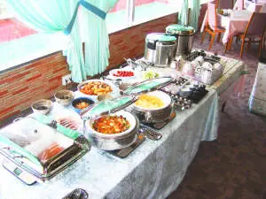
Ninohe Paakuhoteru
Hotel in Ninohe, Iwate.
金田一温泉 仙養舘
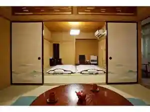
Kindaichi Onsen Sen You Kan
Onsen lodging in Ninohe, Iwate.
座敷わらし伝説の宿 緑風荘
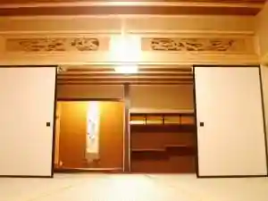
Zashiki Warashi Densetsu No Yado Ryokufuu Sou
Lodge in Ninohe, Iwate.
Dining
短角亭
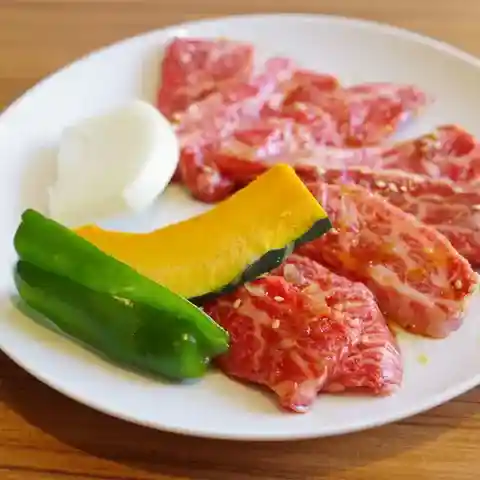
Tankaku Tei
Yakiniku (grilled meat) restaurant in Ninohe, Iwate.
一力食堂
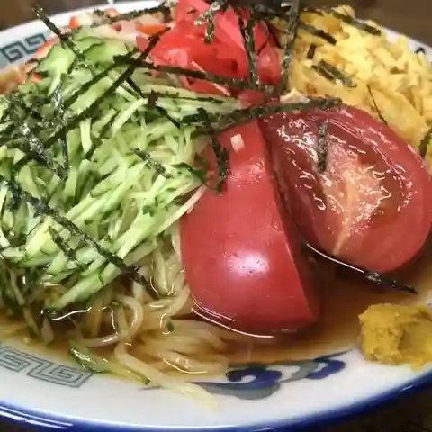
Ichiriki Shokudou
Shokudo diner in Ninohe, Iwate.
龍潭酒家
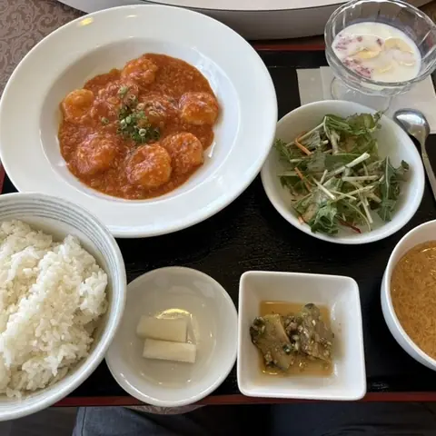
Ryuu Tan Shuka
Chinese restaurant in Ninohe, Iwate.
北のチョコレート工場ツードア
Kita No Chokoreeto Koujou Tsuudoa
Senbei cracker shop in Ninohe, Iwate.
麺じや
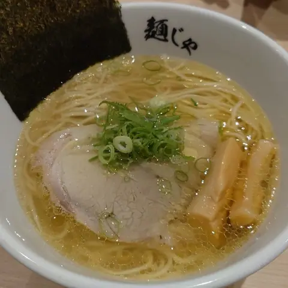
Men Jiya
Ramen shop in Ninohe, Iwate.
自助工房 四季の里
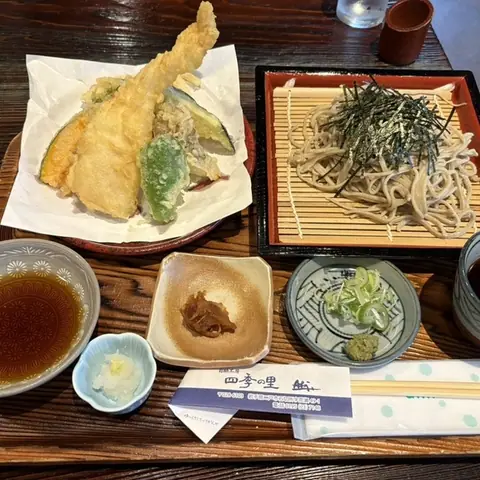
Jijo Koubou Shiki No Sato
Soba restaurant in Ninohe, Iwate.
丹市パン
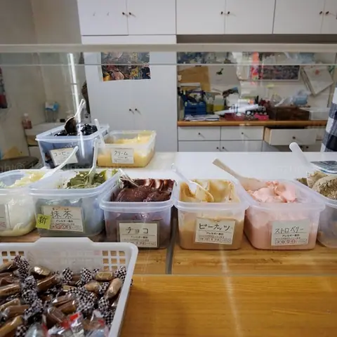
Tan Shi Pan
Bakery in Ninohe, Iwate.
ちっちや食堂
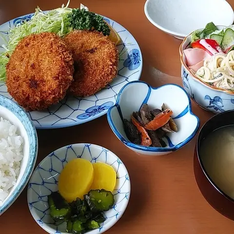
Chitchiya Shokudou
Shokudo diner in Ninohe, Iwate.
支那そば幸道
Shina Soba Yukimichi
Ramen shop in Ninohe, Iwate.
三五郎 下町店
Sangorou Shitamachi Mise
Sushi restaurant in Ninohe, Iwate.
町家の食べ処 福わらし
Chouka No Tabe Tokoro Fuku Warashi
Soba restaurant in Ninohe, Iwate.
金田一温泉 緑風荘
Kindaichi Onsen Ryokufuu Sou
Inn restaurant in Ninohe, Iwate.
割烹旅館 おぼない
Kappou Ryokan Obonai
Inn restaurant in Ninohe, Iwate.
味彩工房逢坂
Aji Sai Koubou Housaka
Ramen shop in Ninohe, Iwate.
和風レストラン蔵
Wafuu Resutoran Kura
Japanese restaurant in Ninohe, Iwate.
巖手屋 二戸本店
Iwate Ya Ninohe Honten
Japanese sweets shop in Ninohe, Iwate.
三五郎屋
Sangorou Ya
Sushi restaurant in Ninohe, Iwate.
せとる
Setoru
Coffee shop in Ninohe, Iwate.
ボヌール
Bonuuru
Hamburg-steak restaurant in Ninohe, Iwate.
食事処 長瀬屋
Shokuji Tokoro Nagase Ya
Shokudo diner in Ninohe, Iwate.
食事処竹はる
Shokuji Tokoro Take Haru
Chinese restaurant in Ninohe, Iwate.
とりっぷ亭
Torippu Tei
Shokudo diner in Ninohe, Iwate.
橋本屋食堂 隠れ家キッチンSORA
Hashimoto Ya Shokudou Kakure Ie Kitchin Sora
Sandwich shop in Ninohe, Iwate.
Sights
Natsukashi no Aji Handmade Workshop
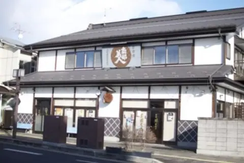
On the first floor, sweets and side dishes such as Kushimochi, Sesame Kamasu, traditional-flavored Kyabamochi, Sanshokumochi, and "Multi-grain starch syrup" certified by a food master are sold.
Katsuraan
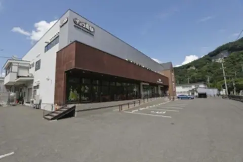
A soba restaurant located at the foot of Tendaiji Temple. The temple was named by the honorary chief priest, Jakucho Setouchi, from the many Katsura trees surrounding the temple.
Zakkoku (Mixed Grains)
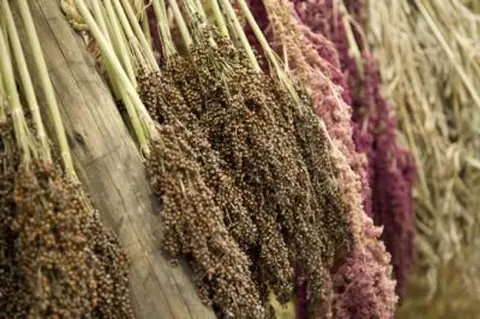
The Ninohe region is located at the northern tip of Iwate Prefecture, and has been actively cultivated for millet since ancient times.
Shiki no Sato Workshop
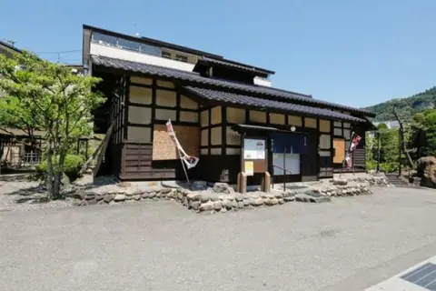
When you open the shoji door at the front, you will find a renovated table and chairs.
Kita no Chocolate Factory & Store 2door
2door is a name that comes from the meaning of "Ninohe" and the tradition and fusion of Nanbu rice crackers and chocolate.
Grain Starch Syrup (Zakkoku Mizuame)
A rustic flavor made by stuffing millet and barley bean sprouts over a period of about two weeks.
Nanbu Senbei Iwateya
A traditional rice cracker made from wheat, sesame, and peanuts.
Nanbu Bijin Sake
This sake is brewed using the pure, medium-hard water flowing from Masen Gorge, and polished to an average rice polishing rate of 54%, using prefecture-produced rice such as Miyama Nishiki and Ginginga, using Nanbu Ryu hand-brewing techniques.
Ninohe History and Folklore Museum
It exhibits artifacts excavated from the Horino ruins, ethnic materials such as daily utensils, and artifacts left by local ancestors.
Nanbu Senbei Ishibashi Senbei
A long-established Nanbu rice cracker shop in Ninohe City that has been in business for 51 years.
Fureai Ninohe
There is a wide selection of fresh fruits and vegetables, including "Natsukoi" cherries, which are harvested in early July every year, "Tenpo", which has a chewy texture that contains sesame seeds and perilla, organically grown cereals, and cooking tomatoes.
Ninohe Civic Cultural Center (cherry blossoms along the Mabuchi River)
Ninohe Civic Cultural Center (cherry blossoms along the Mabuchi River)
Saisai Chicken
Healthy vegetarian chicken raised on plenty of plant-based feed.
Hometown Nature Park Center/Mori no Gakusha
Hometown Nature Park Center/Mori no Gakusha
Ninohe Citizen’s Forest
The Citizen's Forest Festival is held in mid-May, and the area is crowded with trout fishing tournaments and other events.
Kunohe Castle ruins
The site of Kudo Castle, the last battlefield of Toyotomi Hideyoshi.